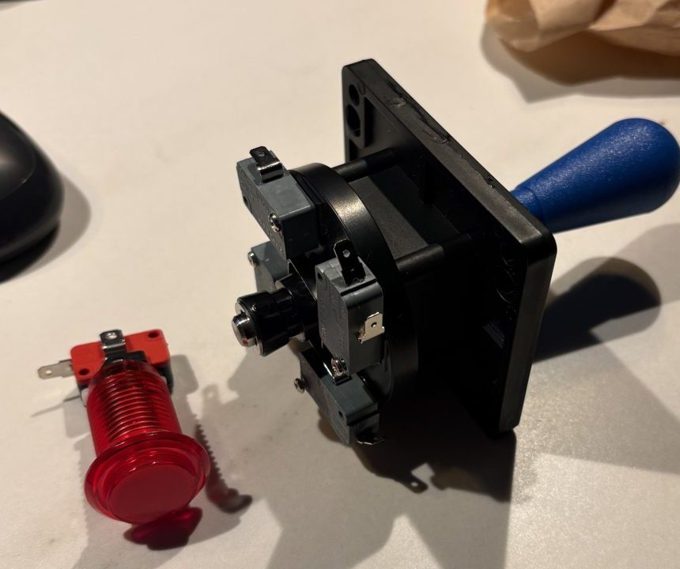
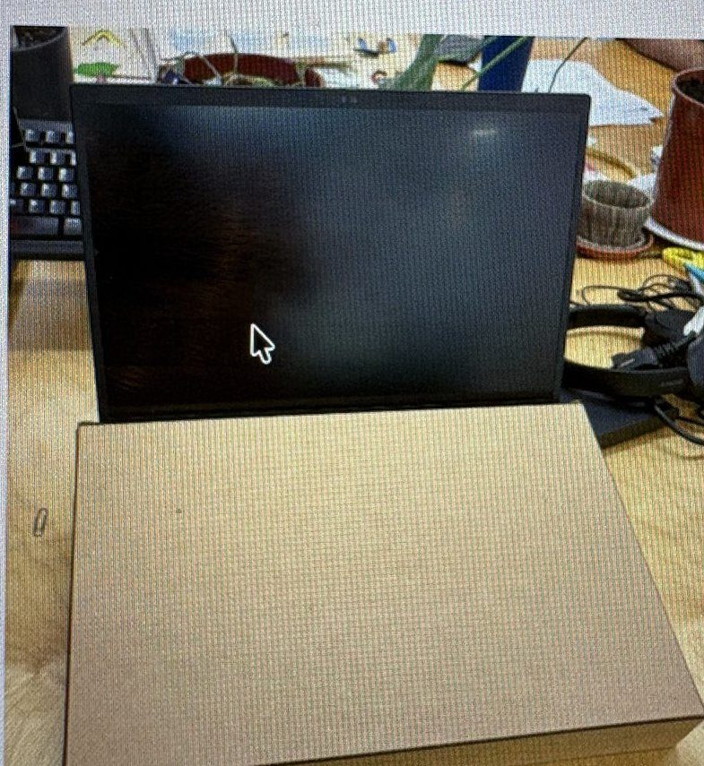

Taller RedeSTEAM. Cada equipo crea un videojuego de temática STEAM con IA y construye el mando para jugarlo.
Entender¿Cómo ve y cómo piensa una IA?
Crear¿Puedo hacer que genere algo que funcione?
Construir¿Cómo lo llevo del navegador al mundo físico?
Limitar¿Dónde no debería decidir por mí?
El reto
El juego vive en el navegador
Describís el juego con vuestras palabras y ArcadIA lo convierte en un juego jugable al momento. Se abre con una URL, sin instalar nada.
El mando es un teclado
Con Makey Makey, cada botón envía una tecla. El juego solo tiene que leer teclas.
Dos subgrupos en paralelo
Una parte hace vibe coding del juego, la otra construye el mando. Se juntan en la integración.
Entrega mínima viable
Si no da tiempo a una máquina completa, basta con un mando funcional sobre cartón que controle el juego.
Día 1 · Entender y crear
Miércoles 14 · 14:30 a 19:15
M0
Bienvenida y autoevaluación
14:30–15:00
Presentamos el taller, el equipo facilitador y el reto final: crear un videojuego con IA y construir la máquina para jugarlo. Dinámica para conocernos y autoevaluación inicial de la percepción STEAM.
Radar del 1 al 6. No se puede repetir la misma puntuación en dos habilidades.
Jugamos varias demos breves y desmontamos qué las hace funcionar: objetivo, personaje, reglas, obstáculos, puntuación y controles. El resultado es una clasificación colectiva que sirve de plantilla para diseñar el juego propio.
Cómo funciona la IA generativa: reconocer frente a generar, qué es un prompt y por qué se equivoca. Después, en equipos y en papel, cada grupo decide tipo de juego, personaje, mecánica y storyboard con post-its, y lo traduce a un primer prompt por capas.
¿Qué es la IA? Explicación y tipos
La IA son sistemas basados en máquinas que, a partir de objetivos definidos por personas, hacen predicciones, recomendaciones o toman decisiones que influyen en entornos reales o virtuales. Interactúan con nosotros y actúan en nuestro entorno, directa o indirectamente. A menudo parecen autónomos y pueden adaptar su comportamiento aprendiendo del contexto.
Definición: UNICEF (2021)
Unas dentro de otras
Toda red neuronal es aprendizaje automático, y todo aprendizaje automático es IA, pero no al revés. Las herramientas que usaremos en el taller viven en el círculo más pequeño.
Cómo funciona un sistema de IA
Adaptado de OCDE (2019)
Tipos de IA
Específica Supervisada No generativa Pocos recursosGeneral No supervisada Generativa Muchos recursos
IA básica
Basada en reglas: la máquina sigue las instrucciones que alguien le ha escrito para resolver una tarea.
Ej.: control de semáforos
Aprendizaje automático
Un modelo que aprende de ejemplos para hacer predicciones.
Ej.: detectar objetos en una cámara · En el taller: Animal Scanner (M1)
Redes neuronales profundas
Un método de cálculo inspirado en cómo funcionan las neuronas de un organismo.
Ej.: recomendaciones de YouTube, asistentes de voz
Modelos fundacionales
Entrenados con enormes cantidades de datos sin etiquetar. Entienden lenguaje, generan texto e imágenes y conversan.
Ej.: ChatGPT, Claude, generadores de imágenes · En el taller: ArcadIA y Batalla de Prompts
Recursos: datos, infraestructura y capacidad de cálculo. Basado en materiales de Xavi Domínguez, CC BY-SA 4.0.
RolQuién es la IA
ContextoTema STEAM, público, estilo
TareaQué juego queremos
FormatoEstilo, colores, controles
Del canvas al asistente de ArcadIA
El asistente hace 12 preguntas, una por pantalla. Las casillas del canvas son casi las mismas, así que el mapeo en papel se pasa tal cual.
Punto de partida (tipo de juego)
Objetivo
Personaje
Escenario
Mecánica
Controles
Obstáculos
Puntos y dificultad
Fin de partida
Otros elementos
Estilo gráfico
Gama de colores
ArcadIA no escribe código: cambia la «ficha» del juego y cada cambio se comprueba antes de guardarse. Por eso el juego nunca se queda roto, aunque la IA se equivoque.
Solo el personaje es obligatorio: lo que dejéis en blanco lo decide ArcadIA. Sí hay que elegir tipo de juego, estilo (pixel art, flat, línea o sketch) y gama de colores (Atardecer, Bosque, Océano, Neón, Pastel, Blanco y negro o la vuestra).
ArcadIA cambia personajes con derechos de autor (Mario, Pikachu…), armas reales y personas reales por versiones inventadas. Mejor inventarlos desde el principio. Guardad los dibujos del storyboard: luego se pueden subir al juego.
Prompt de la pantalla de inicio
Genera una imagen 2D estilo arcade retro, como las pantallas de inicio de videojuegos clásicos, donde aparezca mi personaje principal [DESCRIPCIÓN DEL PERSONAJE], en un fondo que represente su mundo [DESCRIPCIÓN DEL FONDO], haciendo [ACCIÓN REPRESENTATIVA DEL JUEGO] con el logo de nuestro equipo [NOMBRE DEL EQUIPO] a modo logo de empresa de videojuegos en la parte superior y un botón grande de PLAY en el centro abajo de la pantalla.
Cada equipo diseña su propio mando: cuántos controles, cuáles (joystick, botones o los dos) y dónde van. Después lo fabrica en cartón y lo conecta con Makey Makey para que funcione como un teclado.
Un botón ocupa una tecla; un joystick, las cuatro flechas. Máximo 6 teclas.
La Makey Makey tiene 6 teclas: ↑ ↓ ← → espacio y clic. Cada botón ocupa una; el joystick ocupa las cuatro flechas. Elegid los controles según vuestro juego.
Configurad vuestro mando

Joystick con 4 microinterruptores y botón arcade. Cada interruptor tiene 3 patas.

Caja de cartón cortada con láser y plegada, delante del portátil.
Ejemplo A · joystick + 2 botones
Ejemplo C · 6 botones
Decidid el diseño: qué controles, dónde van y qué tecla hace cada uno. Máximo 6 teclas.
Marcad y cortad los agujeros de la tapa según el tamaño de vuestros botones y joystick.
Pegad la Makey Makey en el fondo de la caja y sacad el USB por un agujero en el lado que mira al portátil.
Cada microinterruptor tiene 3 patas con letras impresas: COM, NO y NC. Usad solo COM y NO. NC se queda libre.
NO de cada control a su tecla con una pinza. El joystick tiene 4 microinterruptores: uno por flecha.
Unid todas las patas COM con un cable o una tira de cinta de cobre y llevadlas a EARTH con una pinza.
Antes de cerrar la caja, conectad el USB y probad cada control en un editor de texto.
Si con el joystick arriba y abajo (o izquierda y derecha) salen al revés, intercambiad esas dos pinzas: la palanca pulsa el interruptor del lado contrario.
Decidle a ArcadIA qué teclas tiene vuestro mando (usad el texto del configurador).
Material: una pinza de cocodrilo por tecla usada + 1 para EARTH (como mucho 7), y cable o cinta de cobre para unir los COM.
M6
Cierre y vicio
19:00–19:15
Probamos las versiones generadas cruzándonos entre equipos para recibir feedback. Cierre reflexivo.
Día 2 · Construir y limitar
Jueves 15 · 9:15 a 12:15
M7
Check matinal y elección de reto
9:15–9:30
Repaso de lo aprendido y de la propuesta de juego de cada equipo. Cada grupo revisa el diseño de su mando y qué teclas usa, y se reparte entre vibe coding y construcción.
Teclas del mando
↑↓←→EspacioClic
Los juegos de ArcadIA usan estas 6 entradas. Si vuestro mando no tiene alguna, decídselo a ArcadIA por el chat: «nuestro mando solo tiene izquierda, derecha y espacio». Lo que hace cada tecla también se cambia así: «que el espacio salte».
M8
Integración y pruebas
9:30–10:30
Se unen juego y mando. Cada equipo prueba la cadena completa (botón, ordenador, juego), resuelve errores y ajusta la jugabilidad en varias iteraciones.
Antes de jugar con el mando, un clic dentro del juego: las teclas van a donde se hizo el último clic. Si no, las flechas escriben en el chat. El botón CLIC hace clic donde esté el ratón: dejadlo encima del juego.
Cada equipo presenta su máquina en un minuto y el resto la juega rotando por los puestos. Votación del público con tarjetas de color.
Cada juego tiene su página pública en /juego/nombre-del-equipo (botón «Ver página pública» del Estudio). Sigue funcionando después del taller: se puede enseñar en casa.
M10
Mural
11:15–11:30
¿Por qué es útil la IA en tu día a día?
Durante toda la mañana cada participante responde a la pregunta en el mural colectivo. Lo comentamos en grupo antes del cierre.
Huella de vuestro juego
En el Estudio, la pestaña «Huella de vuestro juego» estima la energía y el CO₂e que ha gastado crear vuestro juego. Generar imágenes gasta mucho más que el texto.
Para el debate: ¿cuántas cargas de móvil ha costado vuestro juego? ¿Qué imágenes no hacían falta?
M11
Prompt Battle show
11:30–12:15
El cierre del taller: competición en directo en tres rondas para poner a prueba los prompts, con los resultados en el proyector.
Generar a partir de un reto.
Replicar un resultado dado.
Todas usan exactamente el mismo texto.
Si salen resultados distintos con el mismo prompt, abrimos un debate guiado: por qué la IA no es determinista y qué implica.
Se juegan con teclado (flechas, espacio y clic) o con el mando de cada equipo. Un clic dentro del juego antes de empezar.
Facilitación
Para quien dinamiza el taller
Antes
Imprimir las tarjetas al crear la sesión: las contraseñas solo se ven una vez. Si alguien la pierde, «Nueva contraseña» en la página de la sesión.
Comprobar que la sesión está abierta y revisar los límites (40 mensajes y 30 imágenes por equipo por defecto).
Decidir si se activa la aprobación manual de dibujos.
Al llegar al aula, probar con su wifi: entrar como alumno en una ventana de incógnito, crear un juego, jugarlo y hacer un cambio por el chat. Comprobar que la dirección impresa en las tarjetas es la correcta.
Durante
Tener abierto el panel en directo con «Activar sonido» para los avisos. Cada aviso se cierra con «Atendido».
Un aviso de «preocupación» lo ve solo el ArcadiaTeam: acercarse en persona, con discreción.
«Pausar a todos» para explicar algo en común. El juego se sigue pudiendo jugar.
«+10 mensajes» o «+10 imágenes» para el equipo que se quede sin.
«Escribir como ArcadiaTeam» para orientar a un equipo atascado desde el panel.
Panel con «Activar sonido»: si se recarga la página, hacer clic en cualquier parte para que vuelva a pitar.
Problemas frecuentes
El juego no responde al teclado o al mando. Clic dentro del juego.
«Ya estoy pensando otro cambio…» Otro miembro del equipo ha escrito a la vez. Esperar, como mucho 3 minutos.
«No he conseguido hacer ese cambio sin romper el juego…» Pedirlo de otra forma o en partes más pequeñas.
«No hemos podido hablar con el servidor…» Es la wifi del aula. Si les pasa a todos y no se arregla, pausar a todos y avisar a la persona técnica de ArcadIA.
Imagen fallida. «Probar otra vez». Si el filtro la descarta, «Otra versión» o describirla de otra manera. El juego sigue con formas de color.
Sin mensajes o imágenes. «Ver equipo» → «+10». Deshacer y versiones siguen funcionando.
Cuenta bloqueada (10 fallos en 15 min). Esperar 15 minutos; mientras, usar la cuenta de otro miembro del equipo.
Contraseña perdida. «Nueva contraseña» en la página de la sesión. Solo se ve una vez: apuntarla.
No consiguen crear el juego. Tienen 5 intentos y el tope no se amplía desde el panel: avisar a la persona técnica de ArcadIA.
Después
«Cerrar sesión» desactiva las cuentas pero mantiene las páginas públicas de los juegos.
Para compartir los juegos: en el panel, «Abrir juego» y copiar la dirección de la pestaña.
No usar «Borrar sesión» si los juegos tienen que seguir online: lo borra todo.
Los chats se purgan a mano cuando pasa el plazo de conservación (npm run purgar -w @arcadia/web).